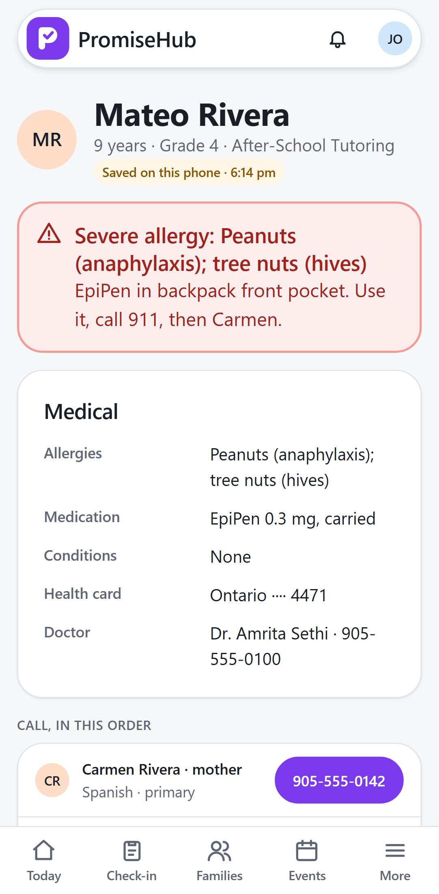
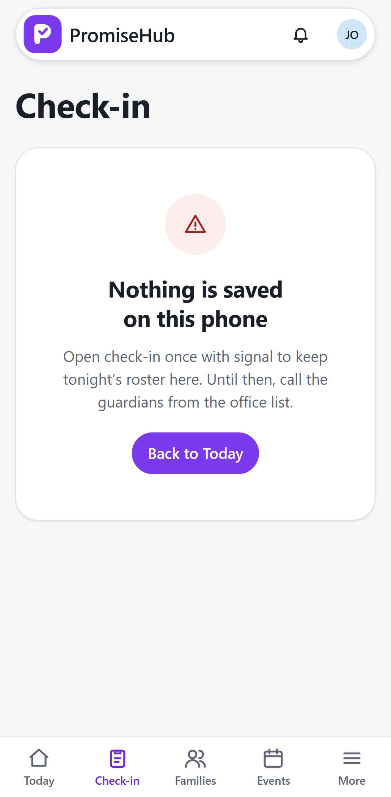

PromiseHub · Video 25
Run check-in offline
No signal in the gym? Check-in keeps going
No signal in the gym? Check-in keeps going
One queued, sent when signal returns.


| Case | Answer |
|---|---|
| Same action twice | Applied once |
| Older check-in after an absence | Present, conflict flagged |
| Signal returns | Queue sent in order |
Next: messaging families